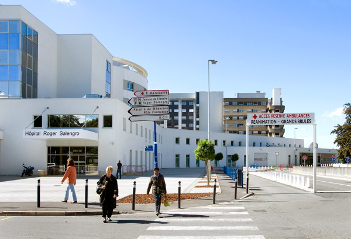

Agent d’Entretien Qualifié (Logistique, Stérilisation)
CHU de Lille, Août 2024
Durant le mois d'août 2024, j'ai travaillé en tant qu'AEQ dans le service de stérilisation de l'hôpital Roger Salengro. De nature un peu introverti, cette expérience m'a forgé et aidé à enfin me débarasser de ma timidé lorsque je travaille avec de nouvelles personnes. J'ai appris l'importance de la cohésion d'équipe qui pouvait réellement nous rendre plus efficace au travail et j'en suis très content. J'ai hâte de découvrir de nouvelles personnes et de travailler avec eux à l'avenir.
